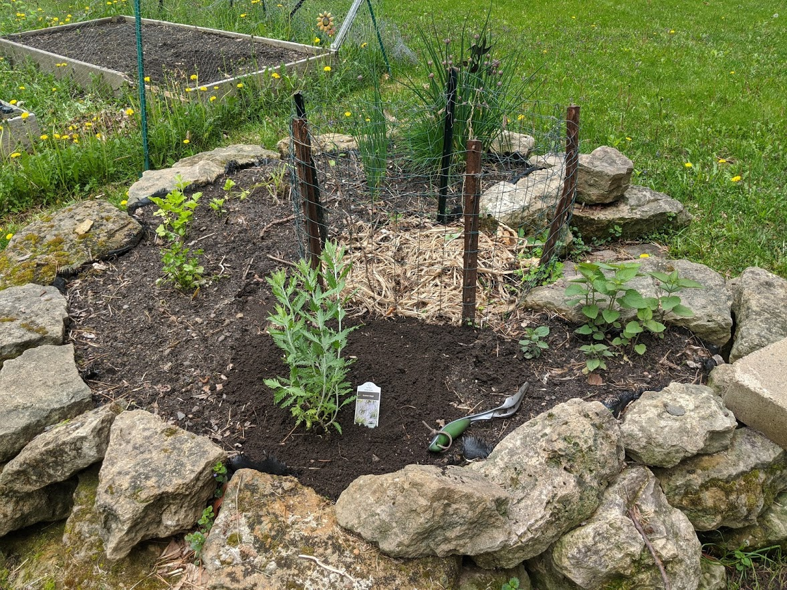
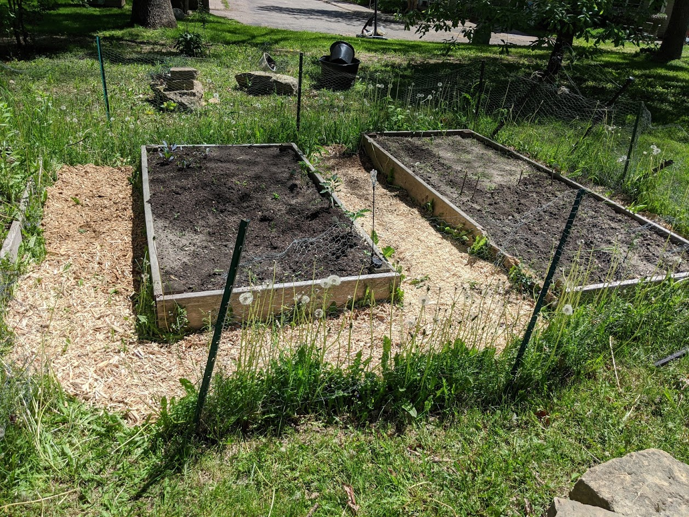

Environmental problem solving is very important to me so this page will hold my research and related projects on that.
My limestone keyhole garden (above) is a small garden system where a path leads to the middle of the beds of soil where compost is deposetited.
